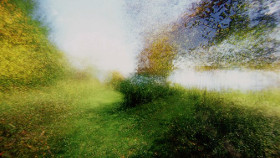

Brouillard – Passage #14
Alexandre Larose – CA 2014 10 min – 16mm
Sc+DoP+P: Alexandre Larose
Repeated walks along the same path, recorded over one another onto the same roll of film by Larose in magnificent 35mm, resulting in an extremely layered one-take film, with which BROUILLARD - PASSAGE #14 also provides an impression of the filmmaker's rich memories of this special place by the lake.
tuesday 13 oct 10.30 pm werkstattkino
Alexandre Larose (1978, Canada) is a French-Canadian filmmaker based in Montreal. While completing a bachelor in Mechanical Engineering, Larose began experimenting with the medium of film using the Super-8 format. He completed a BFA in cinema at Concordia University in Montreal. Larose's body of work is characterised by his scientific approach to the medium. In his ongoing series BROUILLARD, the Canadian landscape is captured in an extraordinary way.
Films (selection) 930 2006 – Le corps humain 2007 – Artifices #1 2007 – Fenêtres 2007 – J 2008 – Ville Marie 2010 – La Grande Dame 2011 – brouillard - passages #2, #5, #6. #12, #13, #14 2009-2014